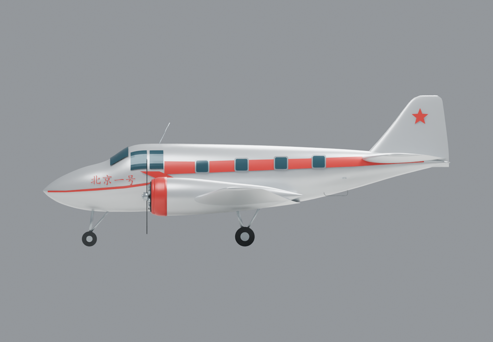

01 / 飞机的故事FIRST FLIGHT · 24 SEP 1958
一次毕业设计，
飞上了蓝天。
1958 年 9 月 24 日，北京一号首飞成功。北京航空学院的师生在校园里完成了这架双发轻型旅客机的设计与制造，让图纸变成了真正的飞机。
这份数字复原以馆藏实机照片为主要外观参考，保留尖长机头、双叶螺旋桨和红色折线腰线。
阅读北航的历史记录 ↗
- 机长基准
- 12.4 m
- 翼展基准
- 16.3 m
- 动力布局
- 双发 活塞式
- 乘员配置
- 2 + 8 人
关于复原精度与资料来源
本模型是依据照片和公开尺寸制作的外观复原，不是原始工程模型。机长 12.4 米、翼展 16.3 米采用北航刊物数据；另有报道记载翼展 16.4 米。局部剖面、翼型、舱门位置、桨叶形状及字体为近似表达。
网页图片均为本项目模型的渲染图，未转载摄影作品。